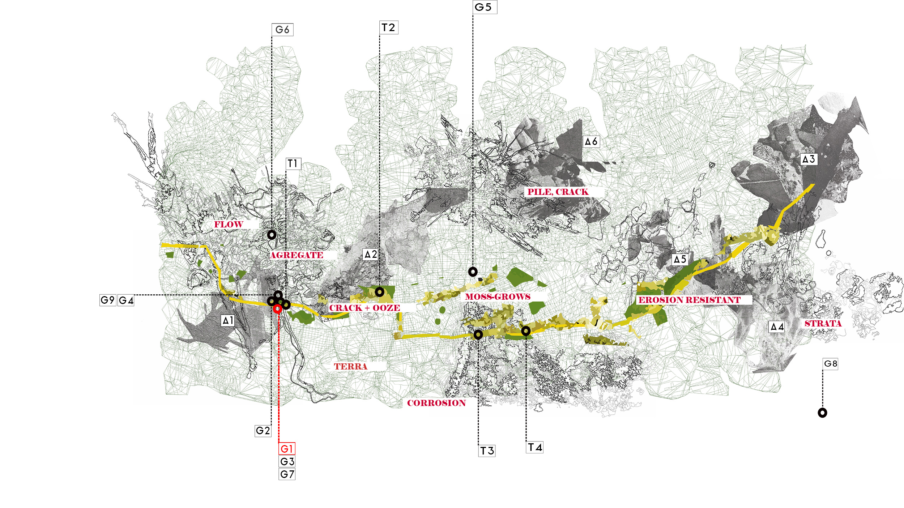
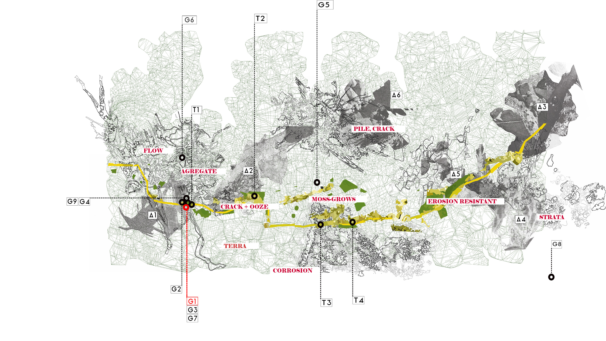
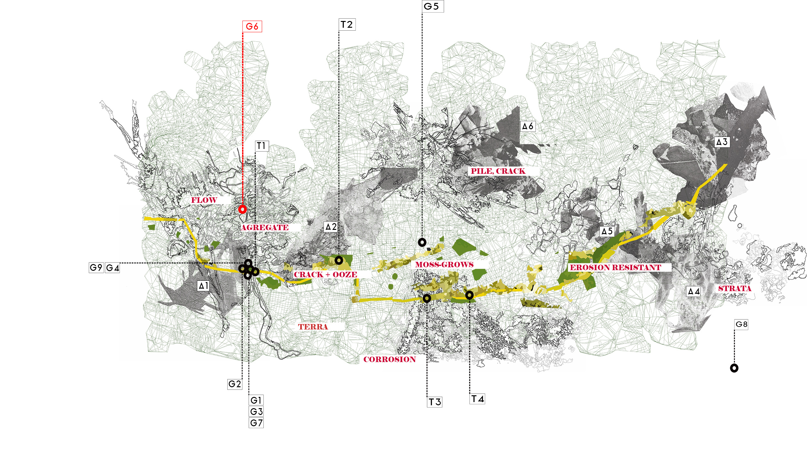
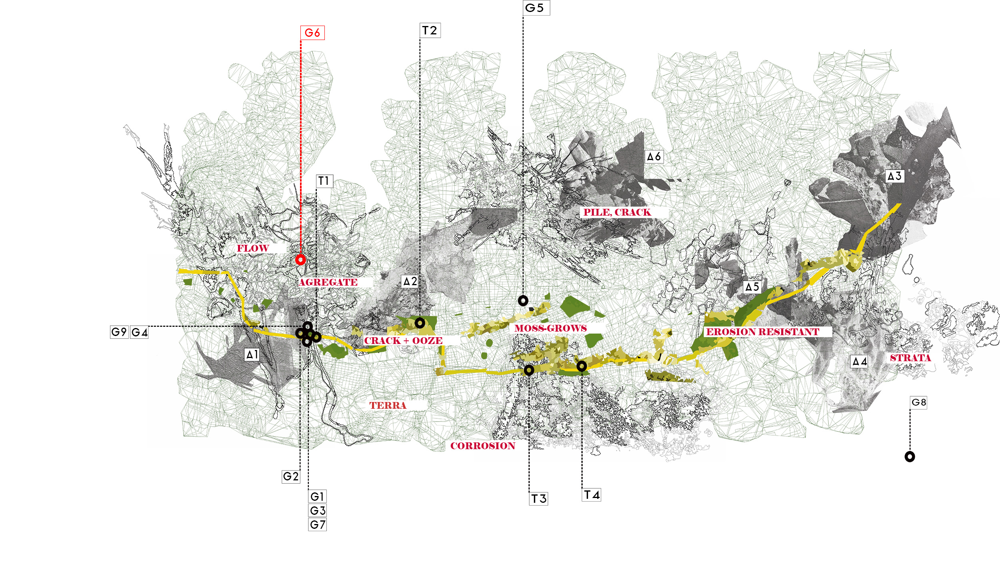
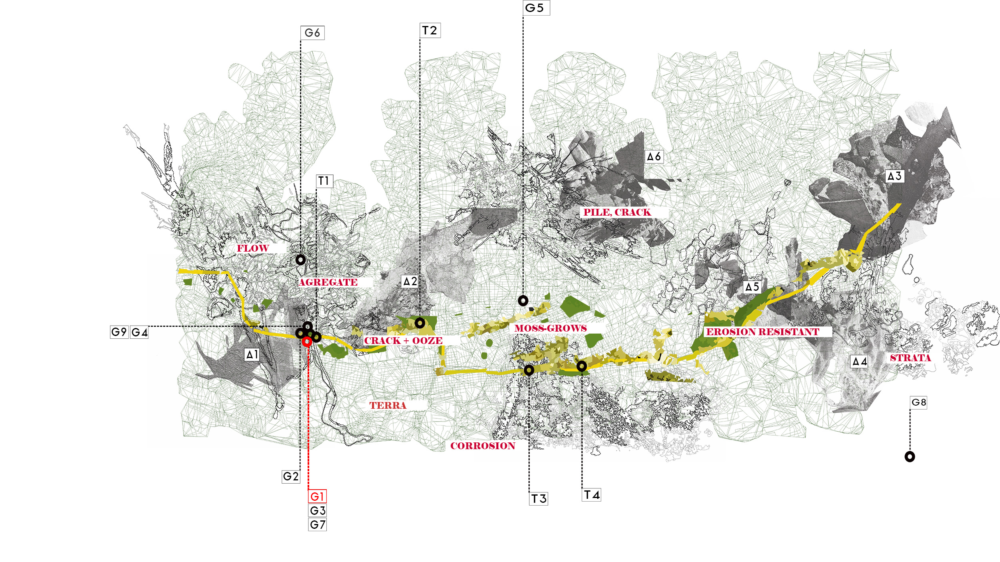
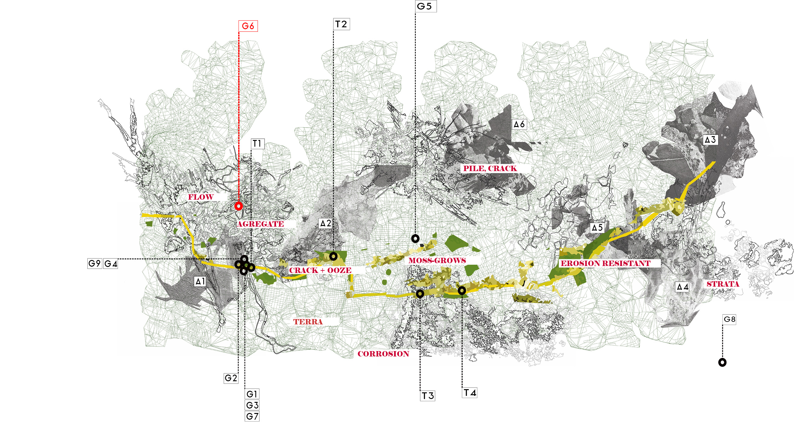
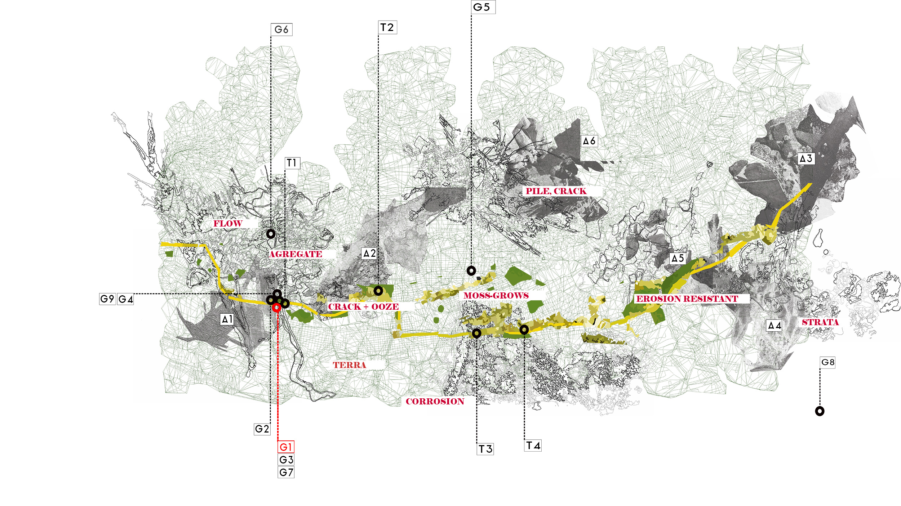
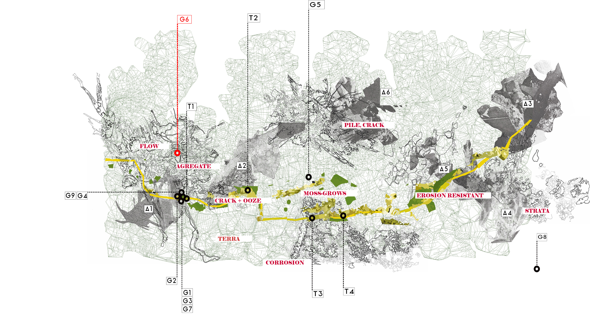

 



 



The writing is an attempt to give voice to the stony matter of urban spaces which we have rendered terra nullius by narrating open and unused urban space as wasteland. Through a theoretical framing, it considers how human-made stones enmesh with the geological processes occurring in the landscape below, and the atmospheric processes above, to form sites of agentic recalcitrance within resultant sites of fragmentation and decay.
The text is separated into the following tags:
T1 – Introductory text
T2 – Fragment 1: A lively material world
T3 – Fragments 2: The lively matter boundary of human and lithic
T4 – Fragment 3: Weathering as a vibrant site of re-assembly
The A letters on the map explore how materials coalesce within pockets of recalcitrance in sites of fragmentation and decay along the Witwatersrand ridgeline. Images were collected, over a period of three years, through a process of walking within the urban landscape. Human-made, lithic matter, asphalt, concrete, and brick fragments, and naturally occurring stony materials are brought together through a process of collaging multiple material scales, juxtaposed with written reflections, assembled over the time of reflective walking.
Weathering maps the observed process of disassembly through examining the enmeshment of
human-made lithic matter, naturally occurring stone, biological matter and other Oddkin. These
observations were found through a process of reflective walks within the Witwatersrand
ridgeline, and collated here as short visual photo-essays.
Aggregate – Brick fragments and other Oddkin
Terra – Clay and mud
Corrisions – Iron and rusts
Pile and Crack – Concrete and other Oddkin
Crack and Ooze – Asphalts
Erosion resistant –Greenstone quartzite
Grows – Lichen and moss
Strata – Red iron shales.
Gathering works consider active material agglomerations, including agentic material agglomerations, together with human assemblages such as rubble piles and cairn.
Each assemblage is 3D scanned as found or assembled within the urban landscape. Each assemblage
considers the atmospheric entanglements of wind, rain, and water, kinaesthetic actions of human
and animal kin, together with organic entanglements.
Gatherings are as follows:
G1 – Asphalt pile – agglomerations, fragments of asphalt sidewalk and uplifted adjoining earth,
assembled through human action and atmospheric action of sun, wind and rain.
G2 – Concrete and Iwisa maize bag – an assemblage of found objects and fragments in situ.
G3 – Asphalt pile and tree – naturally occurring aggregation.
G4 – Home pile - Brick, asphalt, fibre, wire, vines, concrete fragments. Aggregation, of fragments,
found object, tar, wire, brick, internet fibre and organic elements.
G5 – Boulders unearthed – found aggregation, granite and earth - by-product of large earthwork
projects.
G6 – Cairn Emmarentia - various found stones, Assemblage, in situ. Erratic stone found on location.
G7 – Fiber, asphalt and detritus – an agglomeration of urban stony fragments.
G8 – Outliers – Redstone cairn Suikerbosrand. Kinesthetic stony piles found human agglomerations.
G9 - Asphalt, plastic and bricks – decaying fragments found, agglomerations.
Have you ever noticed that the wild, or wilderness, is always elsewhere? Another place, primordial forest, wild savanna, desert, mountain range: wilderness, a place unspoiled by the human. A thriving, lively elsewhere?
Yet, even a cursory investigation of dirt and cracks reveals a complex biome of insistent thriving below our feet, enveloping our senses as we traverse the urban landscape, bringing wilderness into the now present urban landscape.
Sites of decay are geological, an ecological enmeshment wherein stony matter presents a lively subversive material agency. As materials, stone exists from a fine grain of dust to geological scales affecting the ways in which we construct global epistemologies—disappearing as ‘grondstowwe’1, and meaning-laden as thing2. They are among our oldest and most enduring material co-labourers, as the dwelling place, landscape, commodity and object.
"Being located on one of the oldest sections of the continental crust3, and representative of massive geological upheavals of the distant past, the Witwatersrand ridge represents a boundary condition of lithic agency, engaging multiple stony temporalities. Connecting its inhabitants to deep time. While the activities of mining shift stony materials into new temporal echoes through dusty atmospheric enmeshments and watery distillates4, wastelands and sites of urban decay fill with building rubble, tar and concrete, surfaces peel back to reveal the geological landscape below. The new materials, tar, concrete, brick, together with Archean stones present within, are pocks of resistance where rocky outcrop resists city-making. They reveal complex temporal enmeshments between stony matter, animal, vegetable, and mineral, and myriad other Oddkin4, presenting themselves within these sites.
In using the kinesthetic body as the medium of encounter, stony matter is experienced though the decaying agencies of wind, air, rain. It enables the thinking of materials as living things rather than humans as spectators of inert objects. By engaging the reader in a multi-sensory experience of walking and being and becoming enmeshed in the weather worlds of stone, This digital archive the written reflection is positioned as a medium of encounter that troubles the problematic relationship between the time scale of the body, and the time scale of the active processing of weathering and decay, which the digital world obscures. Through its timelessness, lack of scale, and material friction.
ENDNOTES :
1 Grondstoff – Grondsovve ( plural) is the Afrikaans word for commodities, that encapsulated at once,the notion of commodity as, matter, earth, and dust.
2 Thing – in describing the difference between the thing and the object, I follow after W.T Mitchell (Mitchell 2006: 112–124, ‘Founding objects’ for a full discussion), and Jane Bennet (Bennett 2010: 2–4) in that I observe that a thing is a collective and active whole, always in motion. More than the sum of its components. The ‘thing’ then, is matter happening, being or becoming.
3 Quartzites and sandstones cap the Witwatersrand ridge. Formed an estimated 2650 million years ago, from sand weathered from the mountains generated by the collision of the Kaapvall craton and the Zimbabwe craton. [ref]. Cratons are the earlier fragments of the earth’s crust. The Kaapvaal Craton, represents a section of the Vallbara supercontinent. See (Zegers et al. 1998) and (Nguuri et al. 2001) for a full description.
4 Mining, and re-mining of mine dumps within Johannesburg, has contaminated both groundwaters, with heavy metals, and due to re-mining, enabled the aerosolisation of contaminated mine dust. For a good overview of acid-mine-drainage see: ‘Acid mine drainage and its governance (Bobbins 2015)’. For an overview of the discussion concerning mine-tailings, see the essay by Kardas-Nelson, in After the mines (Larkin 2013).
5 Oddkin, references Donna Haraway, call to make Kin as oddkin, in addition to, godkin and other genealogical constructs to tackle the present trouble. For a full description See : (Haraway 2016: 1, 99–103).
LIST OF REFERENCES :
Bennett, J. (2010) Vibrant Matter: A Political Ecology of Things. Durham: Duke University Press
Bobbins, K. (2015) Acid Mine Drainage and Its Governance in the Gauteng City-Region [online]
Occasional Paper. Johannesburg: Gauteng Regional Observatory. available from
<https://core.ac.uk/download/pdf/188769607.pdf> [6 July 2020]
Haraway, D.J. (2016) Staying with the Trouble: Making Kin in the Chthulucene. First Edition edition.
Durham: Duke University Press Books
Larkin, J. (2013) After the Mines. Fourthwall Books
Mitchell, W.J.T. (2006) What Do Pictures Want?: The Lives and Loves of Images. New edition edition.
Chicago, Ill.: University of Chicago Press
Nguuri, T.K., Gore, J., James, D.E., Webb, S.J., Wright, C., Zengeni, T.G., Gwavava, O., Snoke, J.A.,
and Group, K.S. (2001) Crustal Structure beneath Southern Africa and Its Implications for the
Formation and Evolution of the Kaapvaal and Zimbabwe Cratons. [online] available from
<https://vtechworks.lib.vt.edu/handle/10919/24271> [6 July 2020]
Zegers, de Wit, Dann, and White (1998) ‘Vaalbara, Earth’s Oldest Assembled Continent? A
Combined Structural, Geochronological, and Palaeomagnetic Test’. Terra Nova 10 (5),
250–259
Over the last years, philosophers have taken to telling us, as if it were a new revelation, that we live in a world with other non-human entities, and that the world does not revolve around humans. Those non-human entities can enter into relationships with one another and even hold meaning outside of the ways we perceive them1. The things that biologists, geomorphologists, horticulturalists and soil scientist have long know of, and studied2. This is something which was common knowledge within the agrarian cultures seems to have been lost on philosophy. That Man is a geological phenomenon, that shapes and deeply scars the landscapes at a geological scale, and is deeply enmeshed with the natural world, in the urban landscape. That far from being inert, stony matter entangles with lively Oddkin and humans to shape complex social material relations, within a weathering world, composed of cycles of decay, sedimentation, and aggregation3.
The role of architecture and urbanism has always been the smoothing, ordering and subjugation of the landscape, and the ordering and objectification of stone. Particularly within the urban context of Johannesburg, an industrial city of extraction and production, shifting attitudes to landscapes, from lively animate eco-systems within which human actors are co-labours, to the utopian visions of landscapes as simplified, objectified entities within contemporary cultural 4>. Open land, as a site for active built form or wastelands, awaiting the human body for animation and agency, serves to highlight some imaginaries, human and capital centric and casts doubt upon others, such as material agencies, feminine, non-western ways of knowing and relating to the landscapes and their materials. This serves to highlight the complexity and contradictions inherent within all landscapes. Serving to create fictions within anthropocentric worldviews that have enabled some people to act toward the land and other humans in ways which are convenient when they are perceived to be similar to matter, inhuman. Through the process of dis-animation, the matter of geology has become implicated within the ensuing cultures of material and spatial violence’s enacted within the landscape of the Witwatersrand.
The short sections to follow aim to trouble the notion of sites of urban decay as finite end, through considering sites of urban decay within the city of Johannesburg as moments of multi-scalar enmeshments with vital stones. This is a means to narrate the complex exchanges which take place between the materiality of the modern city, and the larger context of the process of weathering, as geospatial enmeshments.
ENDNOTES :
1 Recent thinking, concerning the new materialism in post-Anthropocene, including the work of Jane Bennet (2010), Donna Haraway (2016), Anna Tsign(2015), and Gabrielle Hecht (2018), attempts to variously address the notion of the lifelessness of materials in ways which shift matter from, archaic animism, to agentic- lively matter, in order to trouble the life-matter binary, in addressing issues of the Anthropocene. This thinking draws variously from Spinozist, Deleuzian philosophy. In comparison, thinkers such as Emanuel De Landa (2016), Jeffery Jerome Cohen (2015, 2016), together with Elisabeth Hallam and Tim Ingold and (2014), Tim Edensor (2005) draw on more Marxist materialism. Both these streams of thought find strong influences from Nineteenth century landscape traditions, including Benjamin, Emmerson, Thoreau and their modern counterparts, Rebecca Solnit(Solnit 2007) and Robert Mc Fairlane (Macfarlane 2016, 2019).
2 The Earth sciences, while a comparatively new addition to the Sciences, are primarily concerned with considering systems, process and geological time scales which dive the formation of the earth. Much of the early thinking around the geological structure of the earth stems from a knowledge of the earth derived from farming practices, such as the work of, The Scottish Geologist and experimental agriculturalist, James Hutton (Hutton 2007).
3 The Russian mineralogist and geologist Vladimir Verndansky work the Biosphere (Vernadsky et al. 1998), together with Eduard Sues, consider that biota is a primary driver of geological systems, secondly that those systems occur on a spherical planet.
4 Discourse with Modernist and Postmodernist, architectural theory, drawing upon, enlightenment philosophy, and Platonic tradition has been much critiqued as the root of the issues sounding city making within the 20th and 21st century. For a short summary, see Tim Edensors discussion on industrial ruins, (Edensor 2005: 1–15), Wiggles discussion on Modernism and Materiality (Wigley 2001), together with Berman’s, ‘all that is solid’ (Berman 1983). For an overview of relevance to material theory.
LIST OF REFERENCES :
Bennett, J. (2010) Vibrant Matter: A Political Ecology of Things. Durham: Duke University Press
Berman, M. (1983) All That Is Solid Melts Into Air: The Experience of Modernity. Verso
Cohen, D. (2016) ‘Seeing Plantary Change, down to the Smallest Wild Flower’. in Climates: Architecture and the
Planetary Imaginary. ed. by Graham, J., Blanchfield, C., Anderson, A., Carver, J., and Moore, J. New
York, NY: Lars Müller, 34–39
Cohen, J.J. (2015) Stone: An Ecology of the Inhuman. 1 edition. Univ Of Minnesota Press
De Landa, M. (2016) Assemblage Theory. 1 edition. Edinburgh: Edinburgh University Press
Edensor, T. (2005) Industrial Ruins: Space, Aesthetics and Materiality. Oxford U.K. ; New York: Berg Publishers
Hallam, E. and Ingold, T. (eds.) (2014) Making and Growing: Anthropological Studies of Organisms and
Artefacts. 1 edition. Burlington, VT: Routledge
Haraway, D.J. (2016) Staying with the Trouble: Making Kin in the Chthulucene. First Edition edition. Durham:
Duke University Press Books
Hecht, G. (2018) ‘Interscalar Vehicles for an African Anthropocene: On Waste, Temporality, and Violence’.
Cultural Anthropology 33 (1), 109–141
Hutton, J. (2007) Theory of the Earth: Investigation into Laws Observable in the Composition, Dissolution, and
Restoration of Land upon the Globe. Forgotten Books
Macfarlane, R. (2019) Underland: A Deep Time Journey. 1 edition. UK : USA: W. W. Norton & Company
Macfarlane, R. (2016) Landmarks. Reprint edition. London: Penguin Books
Solnit, R. (2007) Storming the Gates of Paradise: Landscapes for Politics. 1 edition. Berkeley: University of
California Press
Tsing, A.L. (2015) The Mushroom at the End of the World: On the Possibility of Life in Capitalist Ruins. Edition
Unstated edition. Princeton: Princeton University Press
Vernadsky, V.I., Margulis, L., Ceruti, M., Golubic, S., Guerrero, R., Ikeda, N., Ikezawa, N., Krumbein, W.E., Lapo,
A., Lazcano, A., Suzuki, D., Tickell, C., Walter, M., and Westbroek, P. (1998) The Biosphere. 1998
edition. ed. by McMenamin, M.A.S. trans. by Langmuir, D.B. New York: Copernicus
Wigley, M. (2001) White Walls, Designer Dresses: The Fashioning of Modern Architecture. MIT Press
In passing mention in his text on Baudelaire, Walter Benjamin makes mention of the peculiar habit of eighteenth-century flaneurs walking with a turtle (Benjamin 1997: 54), as if expressing the desire to push back against the speed and commodification of urban life of the industrial revolution. By, calling on the arcana, speed to the living fossil, as a means to engage the deep time of the geological1, as expressed through the fossil record. This arcane theme is picked up by Robert Smithson within his abstract geographies in his reflection on the connection of the geological time scale to modern materials. In his reflections on tar in his work ‘Tar Pool and Gravel Pit, 1966’, he writes 'The tar cools and flattens into a sticky level deposit. This carbonaceous sediment brings to mind a tertiary world of petroleum, asphalts, ozoke' rite, and bituminous agglomerations (Holt 1979: 82)'.
Benjamin's turtle and Smithson tar works together with the pile works of Denis Oppenheim, makes one aware of what Smithson called the primal ooze of the geological (Holt 1979: 82), the slow temporal nature of grinding stone, the steady uplift of mountains, and erosion of stony matter. Bringing them into the temporal scale of the Anthropocene, by creating linkages between humans temporally actions, and the timescales of the geological.
Further drawing on themes of the Archean, to engage the reader, in deep-time and sedimentation, in relation to the material world. Through reflecting on stony matter as more than inert, materials will slip between the boundary of solid and liquid, drawing complex tendrils between the human body and deep time through the material by suggesting that the human is embedded and enmeshed with the geological materiality of stone, in the present urban-landscape.
In this regard, site of urban decay2 stand for a set of temporal paradoxes, decaying materials, are a portal into a recent past and deep time, reminding us of the enmeshments of our very bodies with the geological in a landscape, their fragmentations, and ongoing weathering a reminder of the passage of time. Simultaneously, sites of decay cast us forward into a future when our own constructions will fall prey to the passage of time and crumble into fragments. Yes, ruins are material 'fragments with a future' (Dillon 2011: 11), destined to carry on our material narratives long after we have passed by. They are fragments which connect us to deep geological pasts and extend our temporal futures.
These narratives are awoken through the presence of the body as a geological entity within urban landscape, and directly engaging the matter of urban decay within the sites of enmeshment. Or rather knowing material narratives within weathering landscapes3, urban or otherwise, requires an embodied encounter, of continued being with, through the process of walking and encountering, the medium of the earth within the atmosphere.
Thinking of cities as a series of sites of weathering and composting is a useful one as it enables one to think of cities beyond their current configuration. To pull would be sites of voids, and buildings’ materiality into a living present by engaging them as temporal configurations rather than imagining cities as a fixed perfect present. But as landscapes, enmeshed within lifeworlds of human, and other Oddkin. Ingold and Edensor charge material philosophers with failing to comprehend how we think about matter, in our ever abstracted notions of new material theory, together, writing on things and objects4 that we dwell in a world, where Matter is enmeshed, or to use Donna Haraway's framing, 'composted'5.
ENDNOTES :
1Much of early work within geology was primality preoccupied with finding the age of the earth and reconciling that age with theories of evolutions. Charles Lyles and James Hutton's theories of the earth, together with their contemporaries, Charles Darwin and William Russel Wallace’s theories of evolution all sought to reconcile these notions to one another. For a short account, see: 'The short history of nearly everything' (Bryson 2004: 90–108). For a longer account, see Marcia Bjornerud, excellent account (2018, 2006).
2For the purpose of this conversation, I include sites of industrial ruin, 'uitvaalgond' ( site of urban wasteland, or remainders) and micro pockets of weathering, such as cracking surfaces, roads, and gutters under the umbrella 'site of urban decay.'
3I draw the term, weathering landscapes, from Tim Ingold's, term weather worlds. For the full description of his thinking concerning embodied encounters, see 'Footprints through the weather-world: walking, breathing, knowing (2010)' and 'Being Alive' (Ingold 2011).
4Tim Ingold and Tim Edensor have much to say to the subject of material studies, particularly in their critique of new material theories, continued abstraction from materials themselves. For a full discussion, see Tim Ingold's 'Making, Anthropology, Archaeology, Art and Architecture' (Ingold 2013) and Tim Edensor's, 'Materiality, Time and the City: The Multiple Temporalities of Building Stone (Edensor 2012)'
5Composting is the Term Donna Haraway uses to describe the entanglement of humans, and other, animals, plant life, stone, and mineral agents. For her full description, see, (Haraway 2016: 100–103)
LIST OF REFERENCES :
Benjamin, W. (1997) Charles Baudelaire: A Lyric Poet in the Era of High Capitalism. trans. by Zohn, H. London New York: Verso Books
Bjornerud, M. (2018) Timefulness: How Thinking Like a Geologist Can Help Save the World. Princeton: Princeton University Press
Bjornerud, M. (2006) Reading the Rocks: The Autobiography of the Earth. New edition edition. New York; London: Basic Books
Bryson, B. (2004) A Short History of Nearly Everything. 1st edition. New York: Broadway Books
Dillon, B. (2011) Ruins. Cambridge, Mass: Whitechapel Gallery
Edensor, T. (2012) ‘Materiality, Time and the City: The Multiple Temporalities of Building Stone’. in Spatialities: The Geographies of Art and Architecture. ed. by Rugg, J. and Martin, C. Bristol: Intellect Books, 35–52
Haraway, D.J. (2016) Staying with the Trouble: Making Kin in the Chthulucene. First Edition edition. Durham: Duke University Press Books
Holt, N. (1979) The Writings of Robert Smithson, Essays with Illustrations. New York: New York University Press
Ingold, T. (2013) Making: Anthropology, Archaeology, Art and Architecture. 1 edition. London ; New York: Routledge
Ingold, T. (2011) Being Alive: Essays on Movement, Knowledge and Description. London ; New York: Routledge
Ingold Tim (2010) ‘Footprints through the Weather‐world: Walking, Breathing, Knowing’. Journal of the Royal Anthropological Institute 16 (s1), S121–S139
Ruins are often characterised as the finite end to a process, a melancholic rumination on the ruin of modernity, industrial ruination, romantic aesthetics or pictures decline.1 By considering both atmosphere and time, when thinking of the process of decay I aim to think of ruin as a cyclical process, rather than a finite end, drawing on notions of primal ooze, of tar and trash evoked by Smithson, and Oppenheim. Ruin is shifted into a more liquid state. Where stone exists between solid and liquid, where weathering becomes a lively and active process of decay and agglomeration. The scale where stony matter is suspended between organic and inorganic. Where stone composts, more than erodes, within urban landscapes.
Such processes are suspended in the atmosphere, constantly applying sun, wind, rain, and fire to decomposing stony matters, shifting them between liquid and solid, as tars shapeshift and cling to the natural stones below. Concrete limestones, temporarily made plastic, corrodes and rots from the inside out as the iron within rusts, and water seeps through cracks. In opposition to the eternal façade concretes architects looks to portray2. Brick turns to clay as its internal organics recombine outside of their intended configurations.
We speak of an erosion-resistant quartzite precisely because of the hardiness of the quartzite. Yet even now the stones are slowly being weathered back down into the sandy grains from which they were formed in sedimentary layers of a shallow sea3—co-mingling as they do so, with the film of petro-chemicals which stain their surfaces a grimy black—merging with other chemical despoliations4.
We seldom think of stone in the same way as we think of plant-matter. Stone is framed as inert, while plant matter is considered lively. Stone, due to its temporal scale, in comparison to the human temporal range, is immense, and thus, to us, appears a solid and immovable base upon which we build our spatial constructs. As our language suggests, our buildings and philosophies have cornerstones, we make bedrock our foundations, and we write our sacred ideas in stone.
Yet the stone is fecund, to the point at which we walk upright due to the fact that long ago mineral infiltrated animal life (Cohen 2015: 20). Many forms of rock would not exist at all, were it not for the microbial. The kinds of Hematite rich shales found in the banded ironstone within the Witwatersrand supergroup, would not exist but for the respirations of cyanobacteria5. Building matter such as concrete and limestone would not be available to us if not for the deaths of billions of tiny sea creatures in contributing to their formation. These prompting geologist such as Vladimir Verndasky to refute the life matter barrier completely.
While assembling a building weaves complex materiality together, painstakingly selected and gathered, the final form remains within the present perfect, for the briefest of moments, oftentimes beginning to succumb to the actions of erosions and geological forces before the ribbon is even cut. Buildings, it is often said, remain constituted only so long as they are inhabited by human bodies, in some strange, symbiotic dance. Once abandoned, they proceed to disassemble at alarming rates. Once rooves scuttle off to new locations, their bricks and concrete swiftly disintegrate into piles of rubble. Sometimes, when sites are earmarked for new development, simply gathering into the foundations of the new assemblages, or where sites are scraped clean, dumped into the watercourse of the city, or relocating to still sites of dereliction or wasteland, or lithic resistances, within the city.
These relocations, and site of disassembly, and re-assembly mark complex enmeshment within the city, where new moments of post-anthropocentric wilding emerge. In these moments, underlying geology resets the smoothness of city-making. Teaming with non-human enmeshments. Ancient stones mix with modern materials, entangled with fungi, and vibrant plant life. Creatures burrow and nest. Indigenous plants creep between cracks, pushing back against the process of city-making which looked to eradicate them. New recurrent happenings give clues for ways of re-imagining urban landscapes beyond the anthropocentric, smooth, which bring to the city deep geo-traumas. Re-petrifying landscapes, through sites of decay, enables us to consider urban landscapes as Terra, earth and complex compostings. To make a city with the lithic, rather than despite it, by weaving together ancient and modern in new urban formulations.
Engaging with materials, in the process of weathering, enables a shift in thinking, through and with materials. Within these sites where 'human ordering is suspended', enable the action of humans, animals and other kin, to be shifted. Like within a compost pile, human making, and unmaking, actions are brought into relation with the biological and geological process. Here, human actions take place in an ad-hoc fashion, actants as weavers and agriculturalists.
What is central here, is that these moments of disassembly, both in the natural geological process, and sites of urban decay, become the recombinant site of creative agglomeration and assembly, the moment when the gatherings become a happening. That is to say more than the sum of their parts. Further as Tim Edensor notes, these sites become sites of creative ordering and disordering of normative readings of stony materiality6.
Further than this process is both critically enmeshed with a biological process and a process of weathering, reverberating with biological life. Moments of stony gatherings become the site of complex composting, between mineral, animal and other Oddkin.
Paying attention to sites of lithic resistant elicits new opportunities for thinking about urban landscapes. From the bottom up. Opportunities for weaving cities, with humans, other matter and Oddkin in mind. To ask of stony matter, what do they want from us?
The following reflections are the result of a multi-year process of walking, reflecting, and being within these landscapes, working with the materials that present themselves actively within these sites, both modern and ancient, human-built form, and 'wilderness'. They are intensely personal yet simultaneously reflective of the continued need to relate to landscape, in the Anthropocene age . To push back against material denialism, to re-wild the urban.
ENDNOTES :
1 For a good overview, of the discussion, concerning the history of ruin aesthetics, see Ruins (Dillon 2011) and Ruins: Reflections about Violence Chaos and Transience, (Schael 2011).
2 For a full description, of issues of concrete and weathering in architectural aesthetics, see concrete and cultural history (Forty 2012: 52–59).
3 It is hypothesised that the sedimentary quartzite was formed in a sandy sea, due to the resemblance of the cross laminations to depositions found in modern seas. The quartzite differs from modern seas, as it is absent of shell fragments being that is was deposited before the development of Crustaceans and molluscs.
4 Common chemicals found within these spaces, include melted plastics, paint, rubber among much else. Each veld fire, melting, and adhering these to rocky surfaces.
5 Hematite's, are laid down through great oxygenation event, associated with cyanobacteria's photosynthetic processes during in the Precambrian. Iron shales are often interspersed with Cherts, which are a rock of a biological origin. Both of which are laid down as the result of weathering and erosion, in the bed of the shallow sea, which occupied this space some 2.4 billion years ago, since uplifted and eroded. For a full description of the geochemistry see: Geochemistry of Archean shales from the Witwatersrand supergroup. (Wronkiewicz and Condie 1987).
6 For a full, reading of Endnsores thinking on how industrial ruins can assist with questioning normative realities of materiality. See, (Edensor 2005), Chapter 4: Materiality in the Ruin: Waste, Excess and
Sensuality.
LIST OF REFERENCES :
Cohen, J.J. (2015) Stone: An Ecology of the Inhuman. 1 edition. Univ Of Minnesota Press
Dillon, B. (2011) Ruins. Cambridge, Mass: Whitechapel Gallery
Forty, A. (2012) Concrete and Culture: A Material History. London: Reaktion Books
Schael, H. (2011) Ruins: Reflections about Violence Chaos and Transience. Bilingual edition.
Stuttgart: Edition Axel Menges
Wronkiewicz, D.J. and Condie, K.C. (1987) ‘Geochemistry of Archean Shales from the Witwatersrand
Supergroup, South Africa: Source-Area Weathering and Provenance’. Geochimica et
Cosmochimica Acta 51 (9), 2401–2416